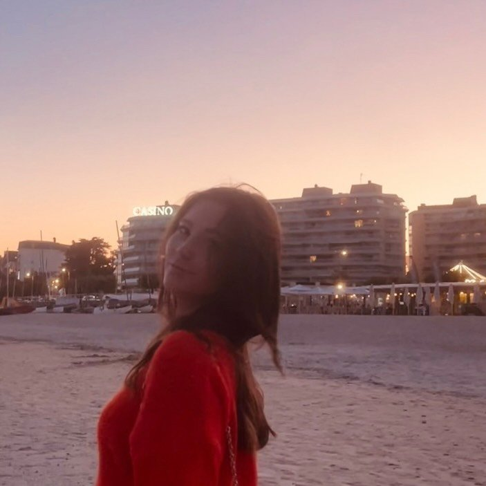

Welcome to my page. I’m a curious student who loves being outdoors, finding films and stories that shift how I see things, and sharing simple moments with the people who matter.
Get in touchTrails and open ground are where I reset and keep a steady pace. They’ve taught me consistency, listening to my body, and the satisfaction of reaching a place one step at a time.
I love when the scenery changes—new cities, new routines, new food. Every trip stretches my mental map a little and leaves memories I revisit in photos.
From old classics to fresh indie releases, the screen is still my favorite place for stories that take their time. A strong score, careful lighting, and I’m in.
Find me online
Direct links—click to open in a new tab.